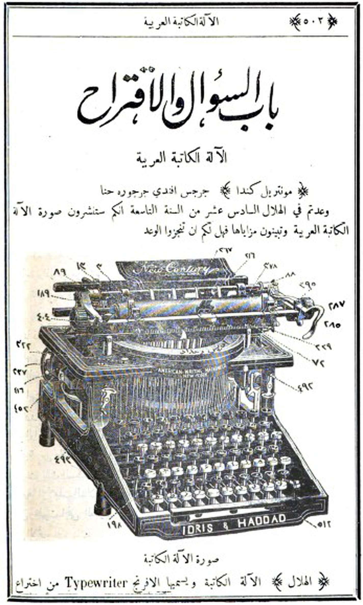
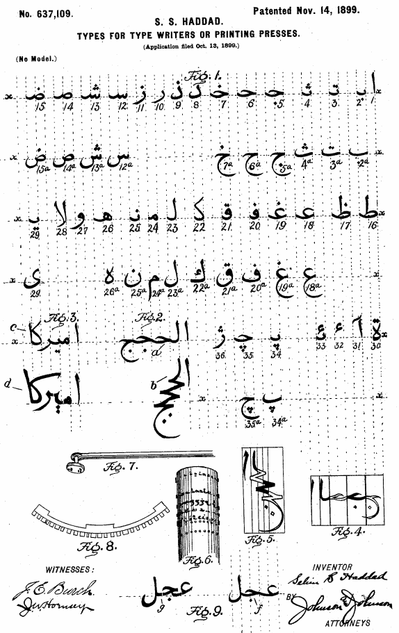
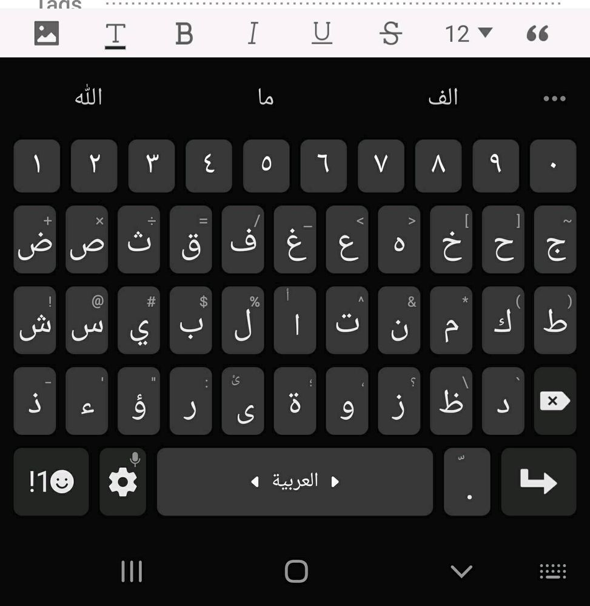
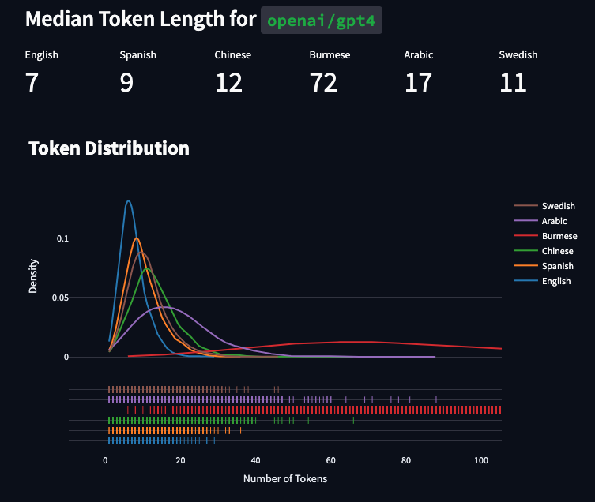

datorbehandling av arabisk text
den första arabiska skrivmaskinen, 1899


den moderna arabiska "QWERTY"-layouten, غفقثصض

dock utan diakritiska tecken!
svenska bokstäver har ett unikt unicode-värde
beroende på om bostaven är gemen/versal:
bokstav
unicode
H
U+0048
h
U+0068
arabiska bokstäver har ett unicode-värde oavsett positionen, d.v.s.:
tre sätt att beräkna WER:
translitera till latinska bokstäver
ta bort diakritiska tecken
inkludera diaktritiska tecken (DER) i WER-beräkningen
Whisper använder (2)
[1] WER ökade från 4.68% → 5.27%
[1] Abed, S.; Alshayeji, M.; Sultan, S. Diacritics Effect on Arabic Speech Recognition.
Arab. J. Sci. Eng. 2019, 44, 9043–9056
 Median Token Length for openai/gpt4